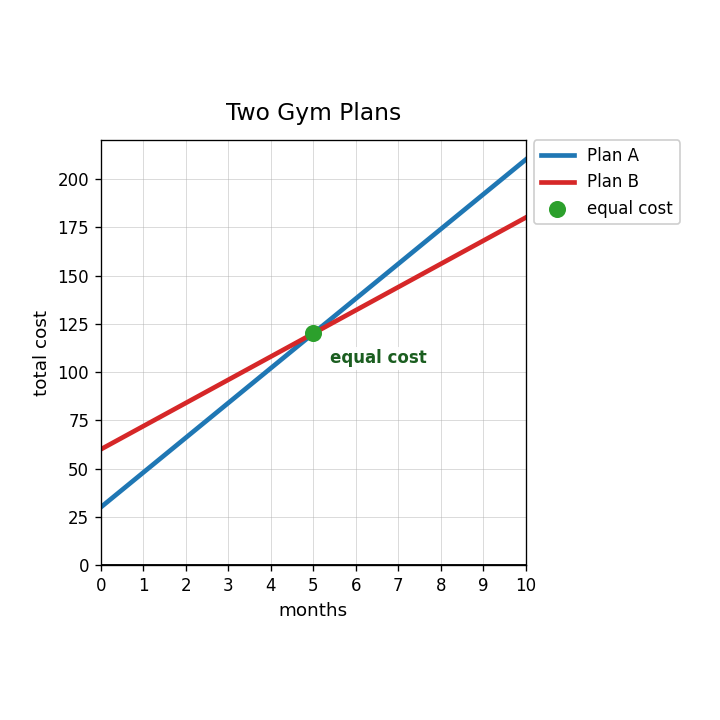
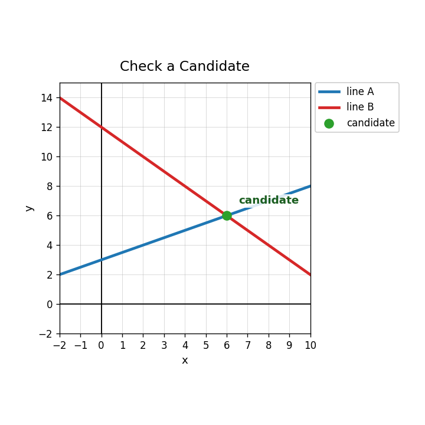
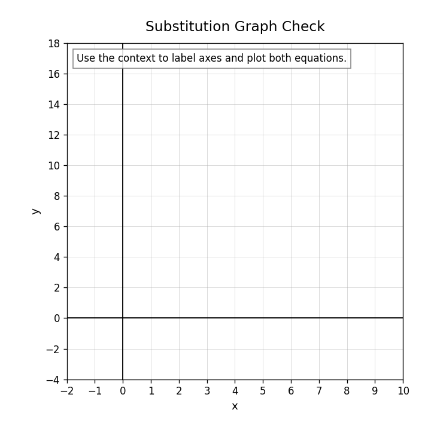
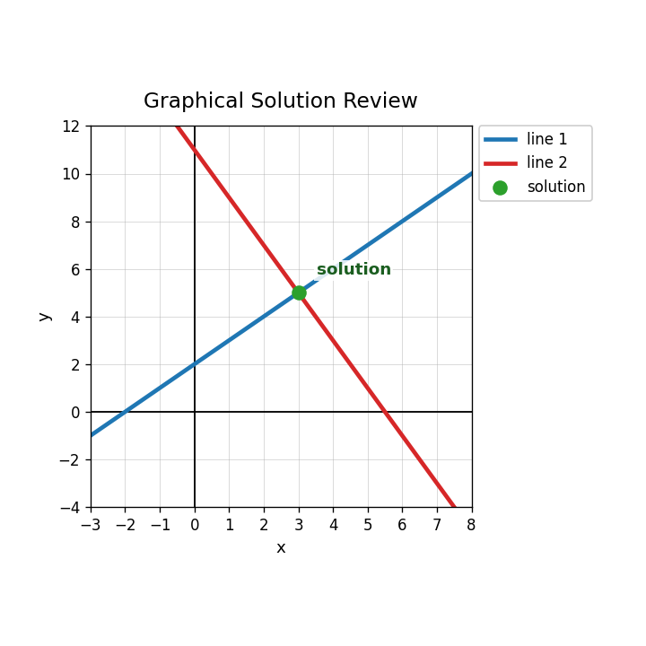

A gym offers Plan A and Plan B. Let $m$ represent months and $C$ represent total cost. What do the coordinates of a solution point represent?
Use the graph to write a possible equation for each gym plan.

Use the gym-plan graph to explain the meaning of the intersection in context. Include both coordinates in your explanation.
For the gym plans, write a system, solve it, and decide which plan is better before and after the intersection. Justify your answer.
Rewrite $2x+y=17$ so that $y$ is alone.
If $y=17-2x$, what equation results after substituting into $y=3x+2$?
Use the graph to decide whether the candidate is the solution. Explain briefly.

Which method seems more efficient for $y=17-2x$ and $y=3x+2$: graphing or substitution? Explain.
Solve by substitution.
$$y=17-2x$$
$$y=3x+2$$
Graph both equations on the grid and check the solution.

Why is it not enough to check a solution in only one equation of a system?
Design a system where the solution is $(4,9)$ and one equation is solved for $y$. Explain how your system guarantees that solution.
What are the three possible solution types for a system of two linear equations?
Use the graph to identify the solution and describe how each line supports the answer.

Explain why two equations with the same slope but different intercepts cannot have a shared ordered-pair solution.
Create one system with exactly one solution and one system with no solution. Explain how their graphs would differ.